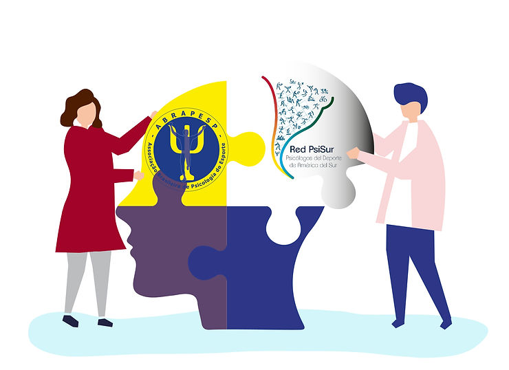

Anunciamos nova parceira: a Red PsiSur. Uma rede de Associações e Sociedades de Psicologia do Esporte da América do Sul que tem como objetivo discutir os rumos da Psicologia do Esporte.

A proposta é o intercâmbio de informações, trabalhos acadêmicos, pesquisa, organização de encontros, congressos e simpósios, cuja troca de experiências promovem a consolidação da Psicologia do Esporte.
Para os associados da ABRAPESP os benefícios:
Descontos em eventos;
Aproximação com os psicólogos da América do Sul; e,
Contato com as oportunidades do continente.
A 3ª Jornada da rede ocorreu nos dias 2, 3 e 4 de dezembro e nosso associado psicólogo Yan Cintra nos representou e palestrou sobre o Papel da Psicologia do Esporte nos Jogos Eletrônicos.